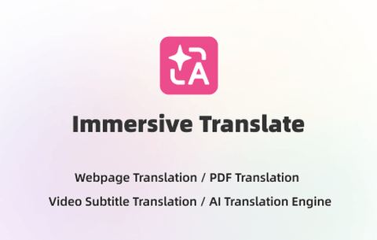
網頁、PDF、YouTube 雙語對照又支援繁中，免費版就夠日常用
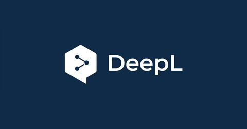
長文翻譯最自然，免費每月 5 萬字元，付費約 8.7 美元
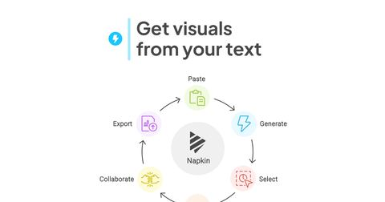
一段文字變資訊圖，獨門功能，Plus 只要 9 美元
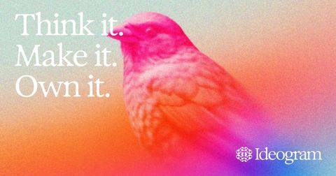
生圖文字最準，海報 Logo 首選，Plus 年繳 15 美元
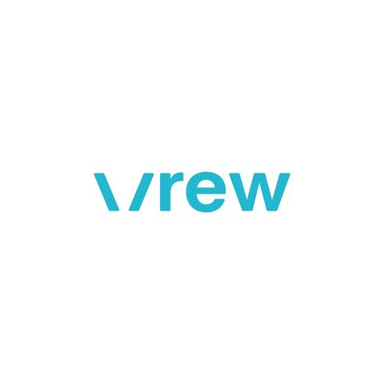
刪字等於剪片、自動上中文字幕，免費每月 200 分鐘
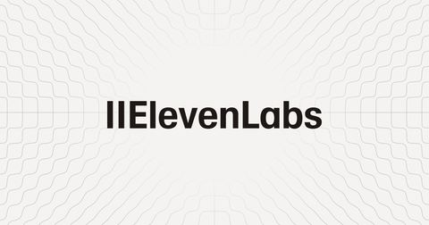
最自然的中文 AI 配音，6 美元就能商用
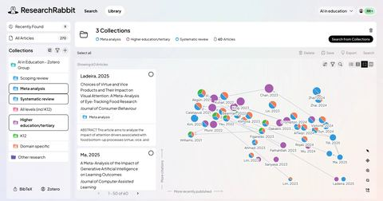
論文引用網絡圖永久免費，找文獻神器
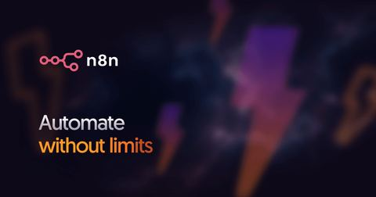
開源可自架、完全免費不限流程，自動化最強底牌
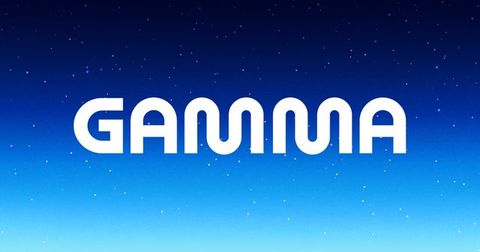
一鍵排整份簡報可匯出 PPT，Plus 年繳 9 美元
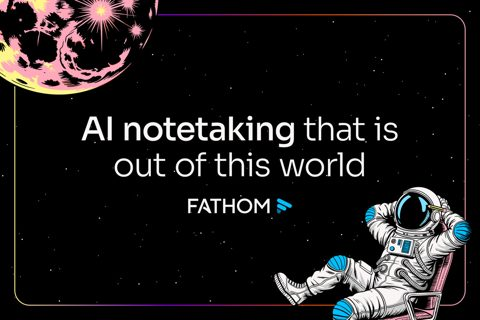
免費版不限量錄影、逐字稿和摘要，個人用超大方
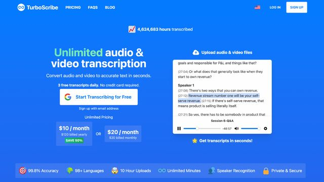
免費每天 3 檔、含繁中，10 美元轉錄不限量
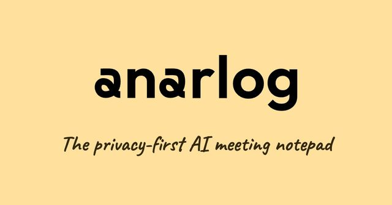
開源、本機轉錄不限量又不派機器人，隱私與免費兼得
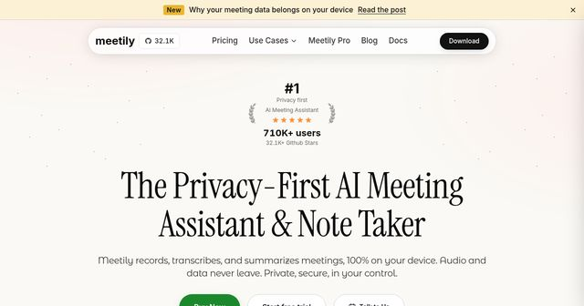
開源本地會議記錄，資料不上雲、社群版免費
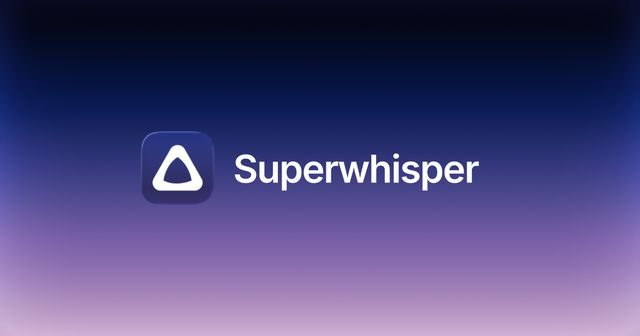
本機語音轉文字免費一直用，任何 App 都能口述
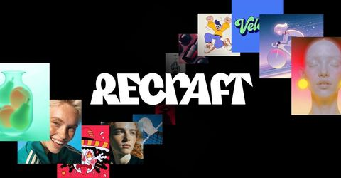
向量圖與圖示專精，Basic 年繳 10 美元
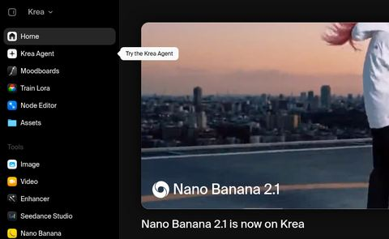
即時出圖、多模型一站切換，但 Pro 21 美元略超預算
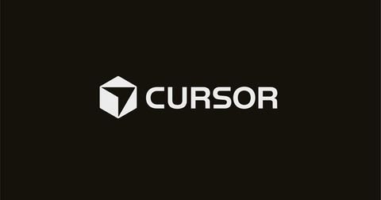
看懂整個專案的程式編輯器，Pro 剛好 20 美元
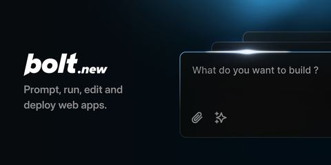
免費每月 100 萬 tokens 同類最大方，但 Pro 25 美元超預算
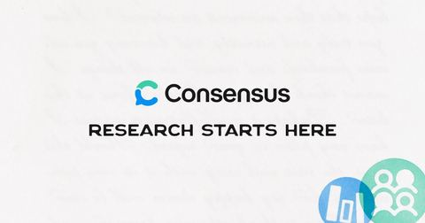
結論附論文引用，免費每月 10 次 Pro 分析
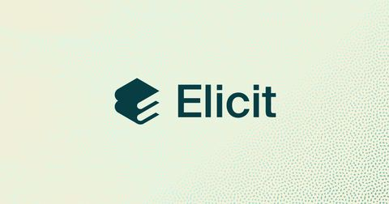
免費無限搜尋 1.38 億篇論文，付費版太貴不必買
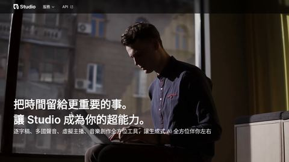
台灣口音、台語、中英夾雜都聽得懂，但價格未查證
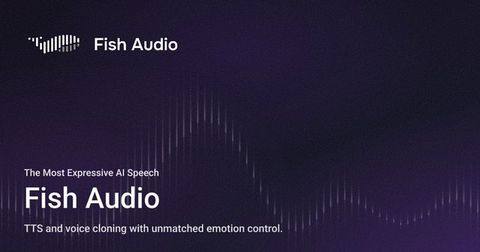
情緒豐富的配音，Plus 年繳 11 美元可商用
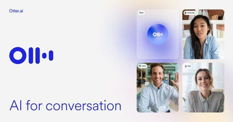
免費每月 300 分鐘轉錄，Pro 年繳 8.49 美元
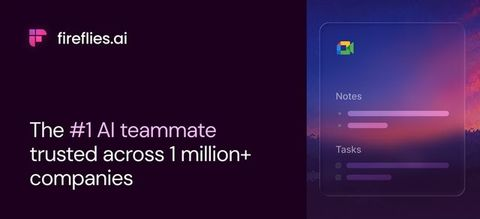
免費轉錄不限量，Pro 年繳 10 美元
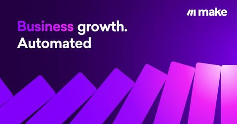
拖拉串 3,000 多個 App，免費每月 1,000 點
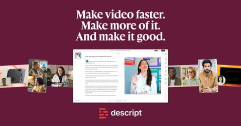
像改文件一樣剪片，Hobbyist 年繳 16 美元
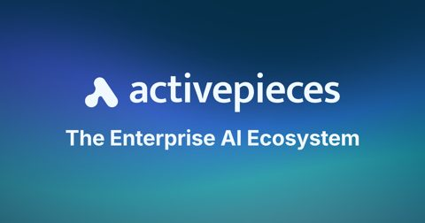
開源可自架的 Zapier 替代，免費版流程不限
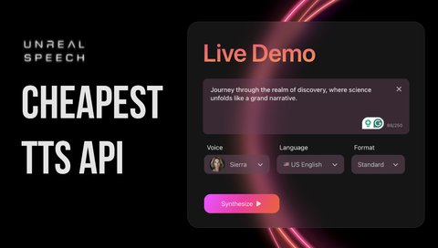
免費每月約 6 小時音訊，便宜但以英文為主
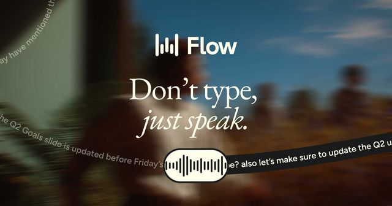
任何 App 用說的代替打字，Pro 年繳 12 美元
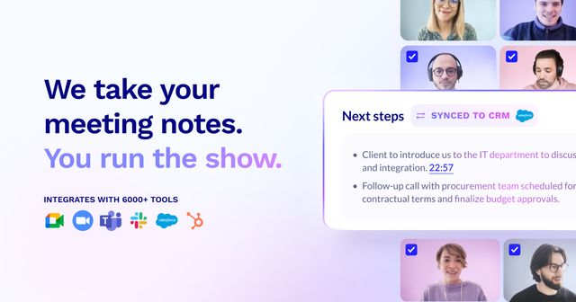
免費錄音轉錄不限量，但 Pro 18 美元偏貴
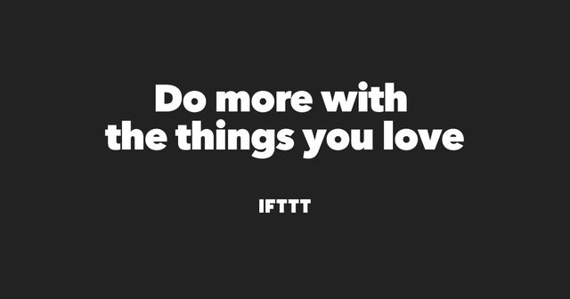
老牌自動化，Pro 年繳 2.99 美元超便宜
免費版含 AI 生成互動簡報，投票問答好用
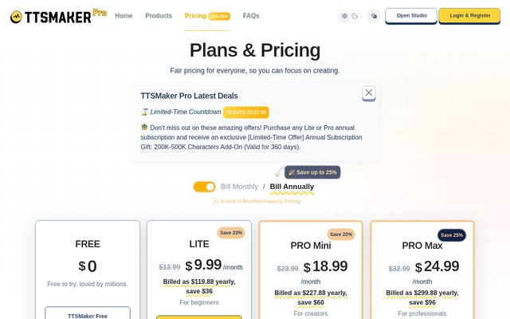
免費版有中文且音檔可商用，只是有廣告和驗證碼
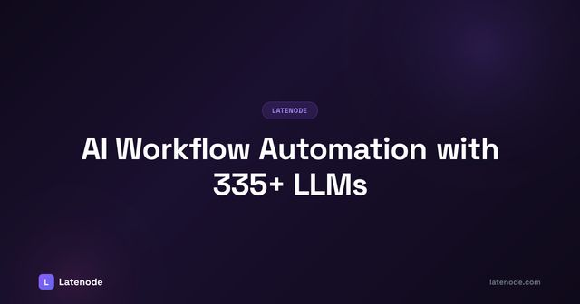
免費每月 1 萬 CPU 秒、超過才隨用隨付，沒有月費
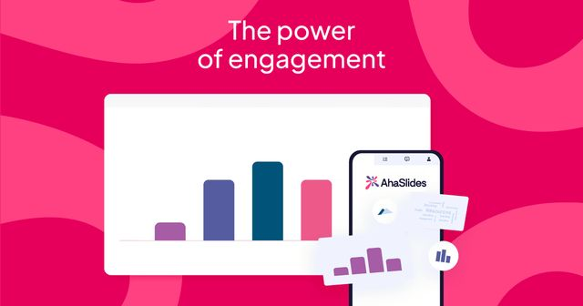
免費版所有題型可用，Essential 年繳 5.95 美元
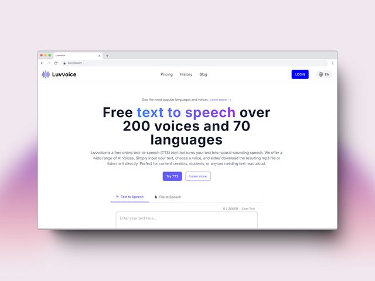
免費每月 1 萬字元，可商用方案年繳 7.75 美元
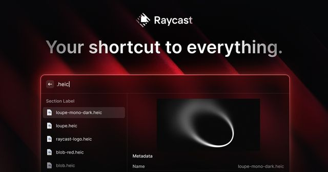
免費核心工具就好用，Pro 年繳 8 美元加 AI
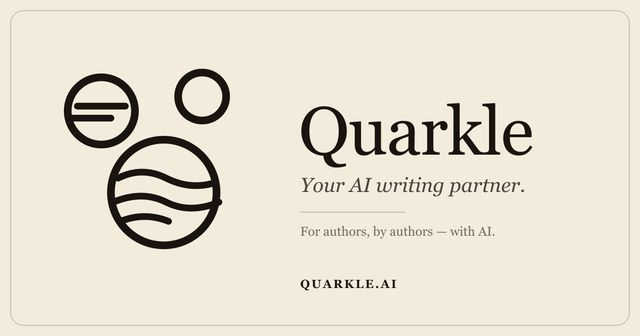
免費每天 100 萬 token、讀完整份稿子給建議
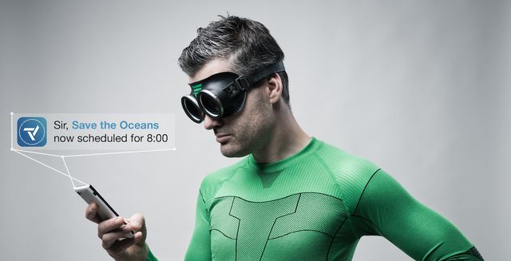
免費版排程不限、含 AI 時長預估
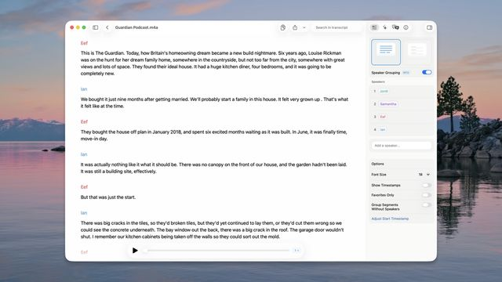
本機 Whisper 轉錄，免費可用；Pro 買斷約 73 美元
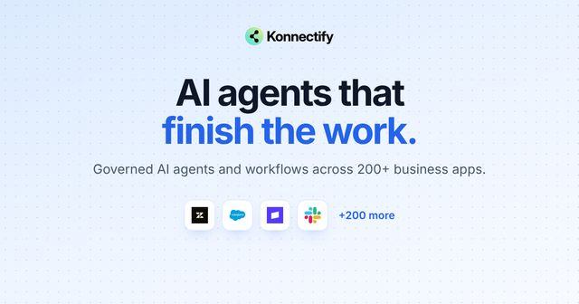
免費每月 2,000 任務，Zapier 的便宜替代
PDF、影片、網頁一鍵變心智圖，支援中文
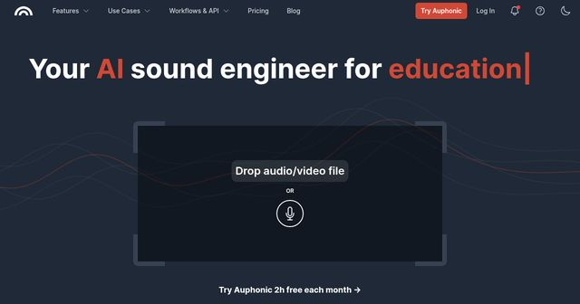
一鍵降噪調響度，免費每月 2 小時
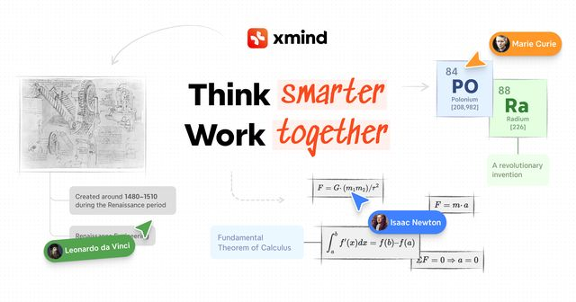
老牌心智圖加 AI 又支援中文，Pro 年繳 4.92 美元
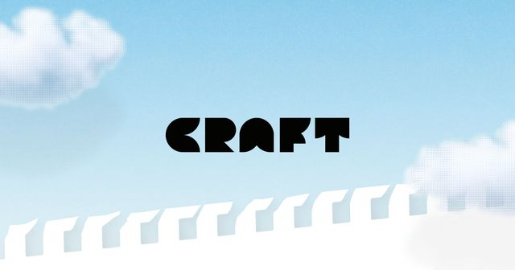
設計感筆記含基本 AI，學生 Plus 免費
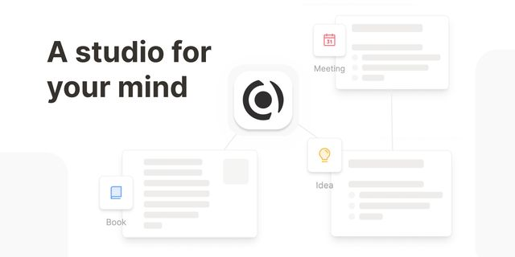
免費版筆記不限量且跨裝置同步
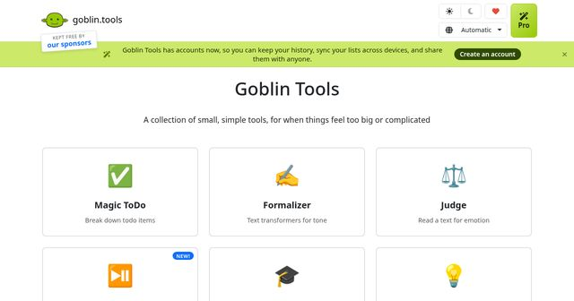
網頁版永久免費無廣告，拆待辦、改語氣很實用
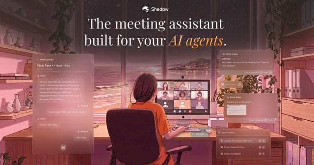
免費轉錄錄音不限量，但只支援 Mac
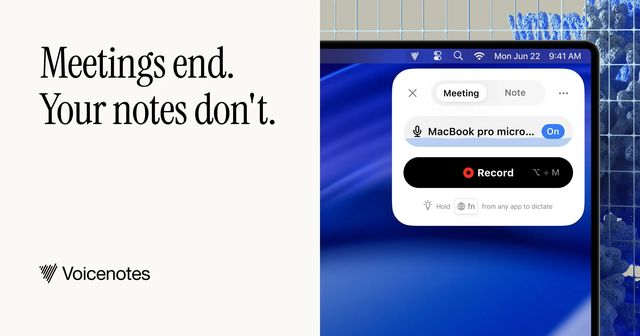
免費每週 100 分鐘，Pro 9 美元轉錄不限時
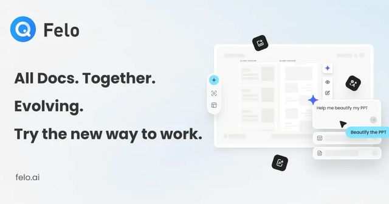
繁中 AI 搜尋，免費快速搜尋不限次數
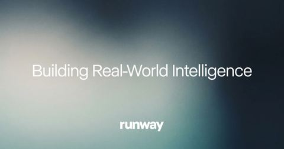
電影感影片強，但只送一次性 125 點試用
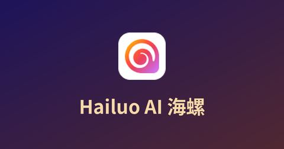
動作自然、限時 7.99 美元，但沒有免費版
不寫程式做 App，但 Pro 25 美元超預算
跟論文 PDF 對話，但免費額度未查證
不用機器人進場，但免費只看有限紀錄
小說劇本專用、記得角色設定，但月繳年繳未查證
改寫文法摘要一處搞定，Premium 年繳 8.33 美元
聲音多、可接 PPT，但免費不能下載、付費 19 美元
老牌穩定，但免費只有每月 100 次兩步驟
版型精緻可協作，但 AI 點數一次性 100 點
英文改寫多種說法，年繳 4.89 美元很便宜
可分析發言比例，但免費每月只 5 場
不用機器人就有即時逐字稿，Pro 年繳 8 美元
瀏覽器抓資料，免費每月 100 點，偏業務用途
便宜文案助手，Unlimited 年繳 7.5 美元
帶情緒韓國配音，Basic 5 美元可商用
有繁中介面，但免費每段限 3 分鐘
免費每月 3 小時，但年繳折扣價未查證
論文寫作邊寫邊補引用，Plus 年繳 12 美元
年繳約 6.67 美元，但免費額度依帳號顯示
小說與二次元插畫向，10 美元起
團隊會議流程完整，但免費終身只 5 份
會議筆記可回問，Pro 15 美元
小說潤稿分析節奏，年繳每月 10 美元
上千種聲音，年付約每月 8.3 美元可商用
超低延遲語音，Pro 5 美元，偏開發者
待辦、文件、AI 代理同一處，中文支援未查證
免費每月 1 萬點加聲音複製，介面英文
長片自動剪短片，但免費版有浮水印
引用地圖找文獻，免費只能 2 張地圖
草圖變介面原型，免費每月 3 次
拖拉建 AI 代理，免費只能建 1 個
網頁式互動簡報，但免費版不含 AI
Zapier 替代，Pro 年繳 15 美元
30 多語文法檢查，但中文能力未查證
教學互動簡報，免費參與人數不限
按時數計費，開會少就便宜，但錄音只留 7 天
免費每月 300 分鐘，但計費週期未查證
免費每月 300 分鐘、多語辨識
錄螢幕留言省會議，但影片 2 週後鎖住
範本超多，Premium 年繳約每月 3 美元
不用機器人、即時給建議，Pro 年繳約 8.33 美元
免費每月 10 場，Plus 19 美元偏貴
一鍵把網頁抓成表格，但免費每月只 6 頁
PowerPoint 裡直接互動出題，月繳價未查證
可加購真人校對，但 AI 轉錄只送 10 分鐘
無機器人 Chrome 擴充，免費每月 10 場
AI 自動排行事曆，月繳價未查證
資訊圖好看，但免費只能下載 2 次
商務圖表多，但免費只能公開分享
互動簡報與小遊戲，月繳價未查證
信箱內 AI 寫信，但免費版信件帶浮水印
口述整理成文章，免費每段 3 分鐘
可貼 YouTube 連結轉逐字稿，免費送 60 分鐘
開源可自架做 PPTX，雲端額度未查證
會議加知識庫很強，但 Pro 20 美元卡在上限
Podcast 自動清贅字，但試用額度未查證
AI 自動整理筆記，Plus 9 美元
ADHD 向個人助理，月繳年繳價差未查證
文章變私人 Podcast，但免費每月僅 3 篇
流程圖白板加 AI，免費額度很小
開源自架免費，但要會寫程式
自動排版不錯，但沒有永久免費版
簡報內直接生成，但只有 7 天試用
有中文介面，但 Pro 剛好 20 美元、免費 100 點
穩重旁白，但只有英文聲音
免費一年只 12 份簡報
免費方案未查證，月繳 24.99 美元
聲音多，但付費年繳 19 美元貼近上限
降噪強，但只有 7 天試用
免費功能有限，Premium 年繳 16 美元
重隱私，但 Plus 約 24 美元超預算
瀏覽器自動化，免費只送 2 小時不續贈
設計感強，但點數一次性、有浮水印、Plus 20 美元
免費終身只 5 場會議
偏顧問團隊，只有試用
一鍵串接，但免費每月僅 100 次
新創募資簡報專用，用途窄
學術英文潤稿，用途較窄
縮放式簡報有特色，但 Basic 額度未查證
偏業務行銷，Starter 19.8 美元、免費額度未查證
可讀性標示好用，但只適合英文
小說工作室，但沒有永久免費版
PPT 變有聲影片，免費只轉 20 次不能商用
免費每月 15 點，付費價格未查證
AI 歌聲很特別，但免費不能下載
免費每場只 45 分鐘、紀錄留 30 天
網頁監控，免費每月 50 點、Personal 19 美元
免費版不能下載
學術英文檢查，免費額度未查證
長篇 AI 編輯器，免費點數用完不重置
便宜配音，但月繳年繳未查證
保留原聲翻譯配音，免費點數只一次性
範本多但偏團隊，計費週期未查證
免費每月 3 份且僅限非商用
功能全，但免費版不能下載分享
AI 鍵盤，但月繳價格未查證
英文文法檢查，年繳 11.67 美元不算便宜
文字變影片，但年繳 16.8 美元、免費只 3 點
免費不能匯出，美元價格未查證
小說編修完整，但 Pro 月繳 30 美元
學術寫作助手，但沒有免費版
有聲書強，但免費版有浮水印、音質低
試用額度未查證，月繳 23 美元超預算
重 GDPR，但只有 30 天試用、月繳未查證
動畫簡報老牌，免費 720p 有浮水印
多人對話配音，但試用額度未查證
小說寫作室，免費每月僅 20 點 AI、年繳價未查證
簡報變數位人影片，免費額度未查證
重隱私，但只送 1 小時、月繳未查證
老牌聽打一年 20 美元，但沒有免費版
老牌線上簡報，AI 額度與月繳價未查證
論文朗讀很便宜，但只有 3 天試用
只有 7 天試用，沒有永久免費版
瀏覽器 AI 代理強，但只標歐元、月繳未查證
試用 7 天就沒，Team 29.99 美元超預算
Startup 每月 99 美元，遠超預算
Premium 29 美元超預算，免費只約 3 份
只有 14 天試用，Pro 37 美元超預算
只有 7 天試用，Pro 年繳 40 美元
沒有永久免費版，月繳 29 美元偏業務團隊
月繳 29.99 美元，超預算
只有 7 天試用，月繳價未查證
最便宜每月 39 美元，超出預算一倍
已改名 Async 轉成一般影片工具，額度未查證、偏離原定位
沒有永久免費版，Core 每月 25 美元超預算
沒有永久免費版，同類有更好的免費選擇
Premium 150 美元且計費週期未查證
已轉成美國課綱的課堂寫作工具，一般人用不到
可編輯 PPTX 只有 7 天試用，計費週期未查證